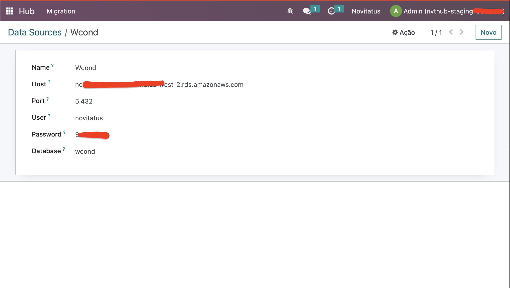
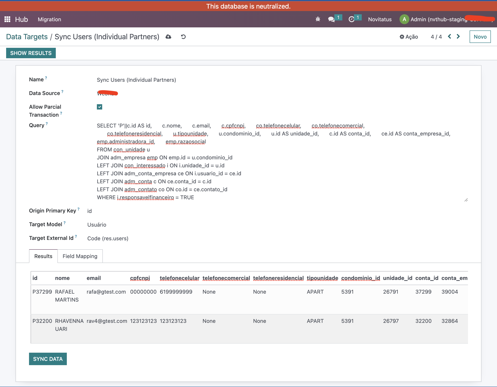
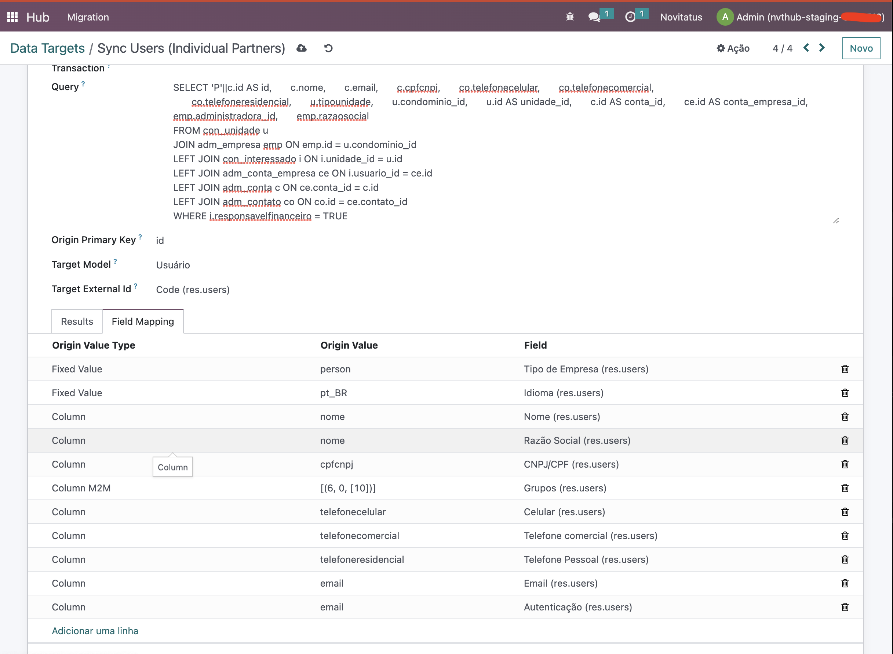
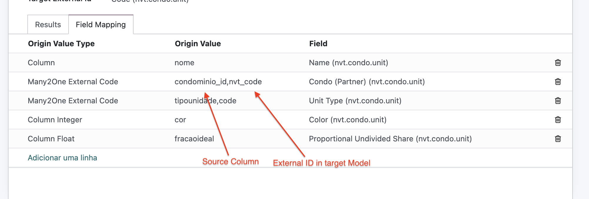

Data Migration Tool
Introduction
The Data Migration Tool is a powerful utility for Odoo developers and administrators. With this tool, you can effortlessly pull data from any Database (supports only PostgreSQL database, soon: MySQL) and migrate it to your Odoo instance. Whether you're transitioning from a legacy system, merging databases, or just need to import data periodically, this tool will save you countless hours of manual data manipulation and scripting.
Features
- Data Source Management: Define and manage multiple PostgreSQL data sources with connection parameters.
- Flexible Data Mapping: Define target models in Odoo and map source columns to Odoo fields. Supports various data types including integers, floats, Many2Many relations, and more. You can even define fixed values or derive values from formulas.
- SQL Query Execution: Directly run SQL queries against your source database, giving you granular control over the data you want to migrate.
- Data Transformation: The tool can automatically map and transform your source data to fit into your Odoo models. This means less manual data cleanup and transformation.
- Preview Capability: Before you commit to migrating data, you can preview it in a neat table format.
- Error Handling: Errors during migration are clearly reported, and you can opt for partial transactions if you don't want to halt the entire operation due to a few problematic records.
Usage
- Define a Data Source: Go to the Data Source menu and provide your PostgreSQL connection details.

- Set up Data Targets: Define the Odoo model you want to import data into and set up field mappings. Specify which columns in your source correspond to which fields in Odoo.



- Run a Query: In the Data Target, write and execute your SQL query. Preview the results to ensure they look correct.
- Migrate Data: With a single click, migrate your data from the source database into Odoo.
Conclusion
The Data Migration Tool streamlines the data import process, making it faster, more accurate, and less error-prone. It's an indispensable tool for developers and administrators looking to enrich their Odoo databases with external data.